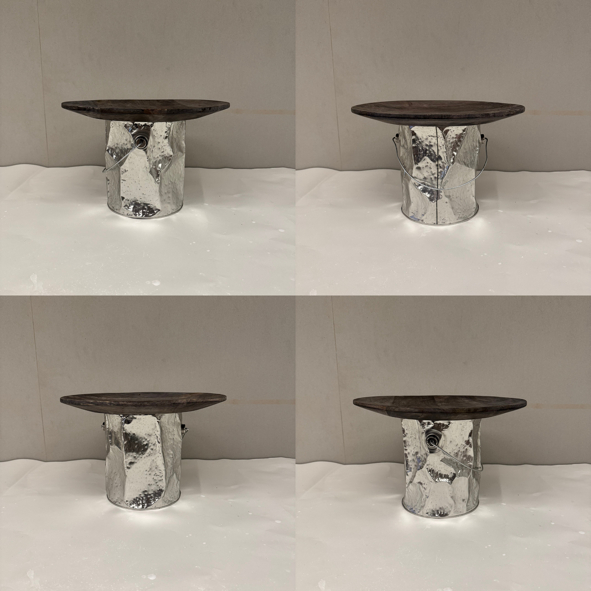
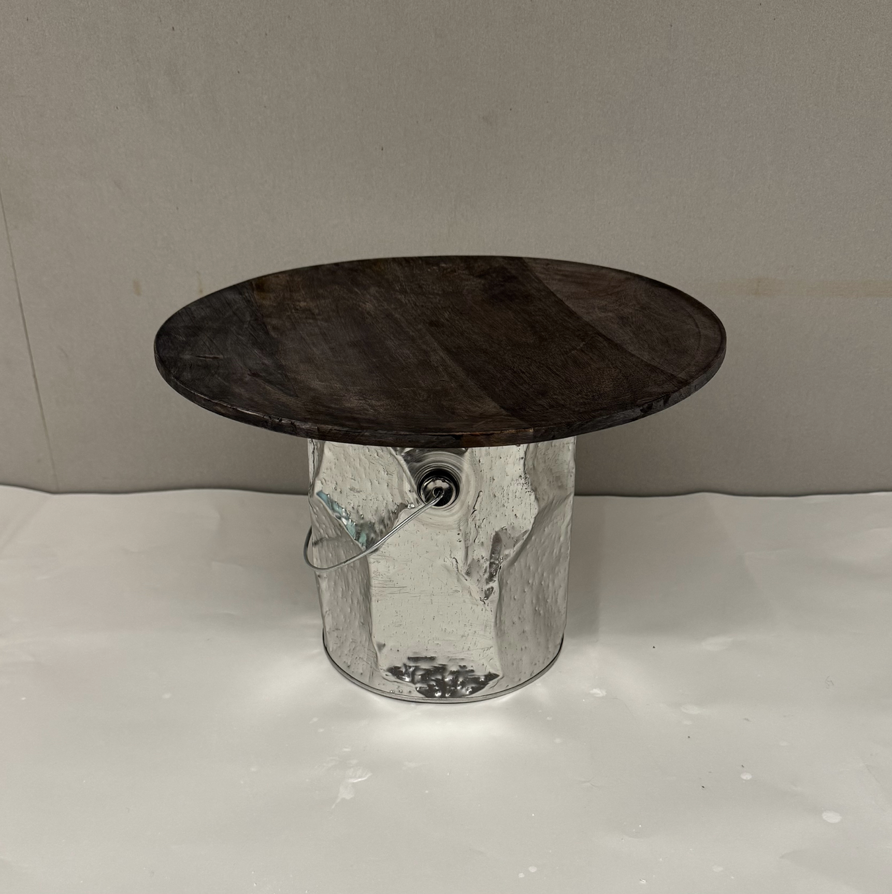

Experimental Media
Reconstruction

This table is constructed from found materials: a discarded paint bucket and a wooden plate sourced from Goodwill. The bucket’s label was removed and its metal surface intentionally dented to create a textured, reflective finish that contrasts with the warmth of the wood. This piece explores the intersection of industrial waste and domestic utility, giving discarded objects a second life through design
More Views
